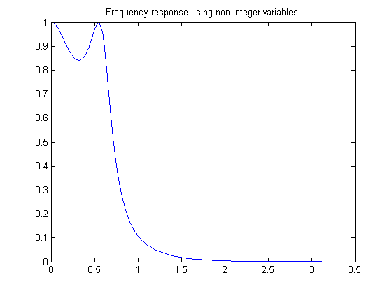
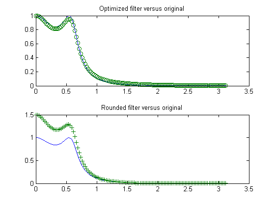

We use the Optimization Toolbox to solve a nonlinear filter design problem. Note that to run this demo you must have the Signal Processing Toolbox installed.
Consider an example for the design of finite precision filters. For this, you need to specify not only the filter design parameters such as the cut-off frequency and number of coefficients, but also how many bits are available since the design is in finite precision.
nbits = 8; % How many bits have we to realize filter maxbin = 2^nbits-1; % Maximum number expressable in nbits bits n = 4; % Number of coefficients (order of filter plus 1) Wn = 0.2; % Cutoff frequency for filter Rp = 1.5; % Decibels of ripple in the passband w = 128; % Number of frequency points to take
This is a continuous filter design; we use cheby1, but we could also use ellip, yulewalk or remez here:
[b1,a1]=cheby1(n-1,Rp,Wn); [h,w]=freqz(b1,a1,w); % Frequency response h = abs(h); % Magnitude response plot(w, h) title('Frequency response using non-integer variables') x = [b1,a1]; % The design variables
We now set bounds on the maximum and minimum values:
if (any(x < 0)) % If there are negative coefficients - must save room to use a sign bit % and therefore reduce maxbin maxbin = floor(maxbin/2); vlb = -maxbin * ones(1, 2*n)-1; vub = maxbin * ones(1, 2*n); else % otherwise, all positive vlb = zeros(1,2*n); vub = maxbin * ones(1, 2*n); end
Set the biggest value equal to maxbin and scale other filter coefficients appropriately.
[m, mix] = max(abs(x)); factor = maxbin/m; x = factor * x; % Rescale other filter coefficients xorig = x; xmask = 1:2*n; % Remove the biggest value and the element that controls D.C. Gain % from the list of values that can be changed. xmask(mix) = []; nx = 2*n;
Using OPTIMSET, adjust the termination criteria to reasonably high values to promote short running times. Also turn on the display of results at each iteration:
options = optimset('TolX',0.1,'TolFun',1e-4,'TolCon',1e-6,'Display','iter');
We need to minimize absolute maximum values, so we set options.MinAbsMax to the number of frequency points:
if length(w) == 1 options = optimset(options,'MinAbsMax',w); else options = optimset(options,'MinAbsMax',length(w)); end
Discretize and eliminate first value and perform optimization by calling FMINIMAX:
[x, xmask] = elimone(x, xmask, h, w, n, maxbin) niters = length(xmask); disp(sprintf('Performing %g stages of optimization.\n\n', niters)); for m = 1:niters disp(sprintf('Stage: %g \n', m)); x(xmask) = fminimax(@filtobj,x(xmask),[],[],[],[],vlb(xmask),vub(xmask), ... @filtcon,options,x,xmask,n,h,maxbin); [x, xmask] = elimone(x, xmask, h, w, n, maxbin); end
x =
0.5441 1.6323 1.6323 0.5441 57.1653 -127.0000 108.0000 -33.8267
xmask =
1 2 3 4 5 8
Performing 6 stages of optimization.
Stage: 1
Max Directional
Iter F-count {F,constraints} Step-size derivative Procedure
0 8 0.00329174
1 17 0.0001848 1 0.000184
Optimization terminated: Search direction less than 2*options.TolX
and maximum constraint violation is less than options.TolCon.
Active inequalities (to within options.TolCon = 1e-006):
lower upper ineqlin ineqnonlin
34
35
Stage: 2
Max Directional
Iter F-count {F,constraints} Step-size derivative Procedure
0 7 0.0414182
1 15 0.01675 1 0.0165
2 23 0.01544 1 -0.00105 Hessian modified
Optimization terminated: Search direction less than 2*options.TolX
and maximum constraint violation is less than options.TolCon.
Active inequalities (to within options.TolCon = 1e-006):
lower upper ineqlin ineqnonlin
23
159
Stage: 3
Max Directional
Iter F-count {F,constraints} Step-size derivative Procedure
0 6 0.0716961
1 13 0.05943 1 0.0594
Optimization terminated: Search direction less than 2*options.TolX
and maximum constraint violation is less than options.TolCon.
Active inequalities (to within options.TolCon = 1e-006):
lower upper ineqlin ineqnonlin
4
156
Stage: 4
Max Directional
Iter F-count {F,constraints} Step-size derivative Procedure
0 5 0.129938
1 11 0.04278 1 0.0428
Optimization terminated: Search direction less than 2*options.TolX
and maximum constraint violation is less than options.TolCon.
Active inequalities (to within options.TolCon = 1e-006):
lower upper ineqlin ineqnonlin
4
Stage: 5
Max Directional
Iter F-count {F,constraints} Step-size derivative Procedure
0 4 0.0901749
1 9 0.03867 1 0.0387
Optimization terminated: Search direction less than 2*options.TolX
and maximum constraint violation is less than options.TolCon.
Active inequalities (to within options.TolCon = 1e-006):
lower upper ineqlin ineqnonlin
4
Stage: 6
Max Directional
Iter F-count {F,constraints} Step-size derivative Procedure
0 3 0.11283
1 7 0.05033 1 0.0503
2 11 0.02881 1 -0.0215 Hessian modified twice
Optimization terminated: Search direction less than 2*options.TolX
and maximum constraint violation is less than options.TolCon.
Active inequalities (to within options.TolCon = 1e-006):
lower upper ineqlin ineqnonlin
4
See if nearby values produce a for better filter.
xold = x; xmask = 1:2*n; xmask([n+1, mix]) = []; x = x + 0.5; for i = xmask [x, xmask] = elimone(x, xmask, h, w, n, maxbin); end xmask = 1:2*n; xmask([n+1, mix]) = []; x= x - 0.5; for i = xmask [x, xmask] = elimone(x, xmask, h, w, n, maxbin); end if any(abs(x) > maxbin) x = xold; end
We first plot the frequency response of the filter and we compare it to a filter where the coefficients are just rounded up or down:
subplot(211) bo = x(1:n); ao = x(n+1:2*n); h2 = abs(freqz(bo,ao,128)); plot(w,h,w,h2,'o') title('Optimized filter versus original') xround = round(xorig) b = xround(1:n); a = xround(n+1:2*n); h3 = abs(freqz(b,a,128)); subplot(212) plot(w,h,w,h3,'+') title('Rounded filter versus original') set(gcf,'NextPlot','replace')
xround =
1 2 2 1 57 -127 108 -34
